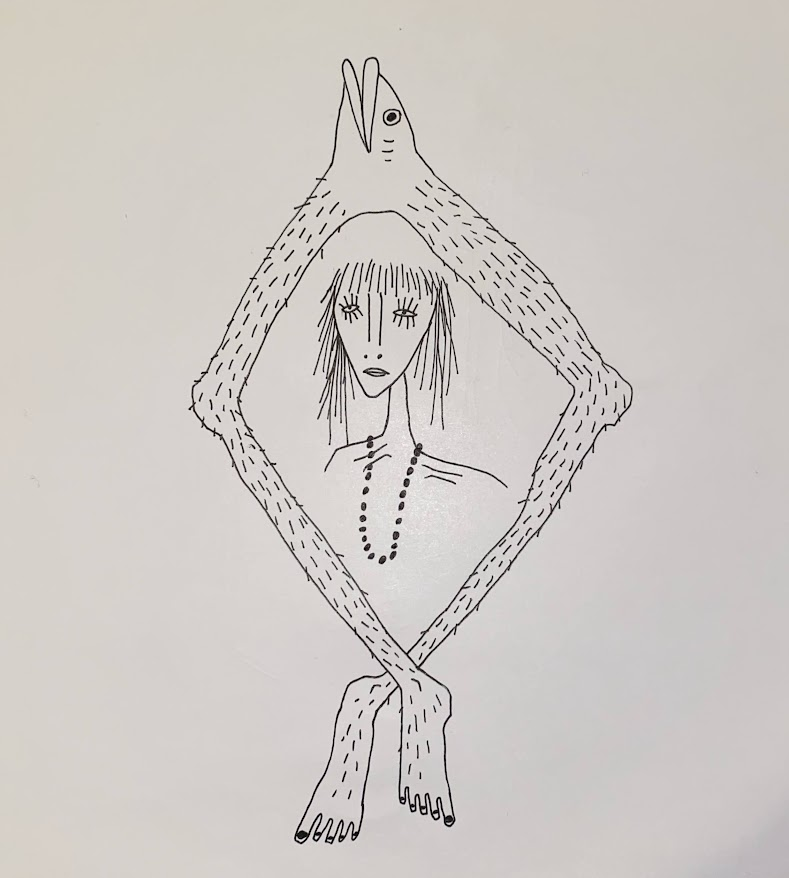

October '19 - June '21
Good Earth Natural Foods
This was the best high school job. I loved each task in customer service I completed. I worked with close friends of mine, and made many more along the way. I learned lots about health food and health challenges that exist in my community. I loved connecting with coworkers and customers.
January '20 - January '21
Rebirth Rings Graphic Design
Finally, a resume item relating to art. I consider myself a very ameteur graphic artist. I prefer a pen and paper, but my good friend offered to hire me to design some merchandise for his ring business. I enjoyed it because I was given virtually all creative freedom, and I'm proud of what I designed for this. It was a great opportunity and I hope to do more comissioned graphic art in the future.
June '21 - July '21
BYU creamery on Ninth
I got this job as a great transition to moving to Provo as a full time student. I especially loved serving all the excited kids who were staying at BYU for various camps. I got some great experience in fast paced grocery while looking for a longer term position on campus. I think my wrists are still sore to this day from scooping all that ice cream.
May '22 - December '23
Full-time missionary, Church of Jesus Christ of Latter-Day Saints
How to put this life changing period of time into words. Let's just say I saw a variety of people experience meeting their Savior for the first time. It was a time of much growth, trial and error, and tender experience in Central Canada.
July '21 - present
Assistant secretary with BYU Electrical and Computer Engineering
This position has probably been the most ideal student on-campus job imaginable. With a very flexible schedule, it allows me to go back and forth between classes and studying. I get to do all kinds of different tasks, everything from helping professors with tests to complete travel expense reports. I especially love the financial aspect of this job, as it gives me great experience for my desired major.
Education
'18 - '21
Maple Mountain High School, graduated with honors
'21 - present
Brigham Young University, pre-business major currently applying to the Marriott School of Accounting
